むずかしければ、窓を開けるだけでも。
次の手紙まで あと3日 大塚さんが、あなたのまとめを読んで返事を書きます。
「準備が足りない」と思うと、先回りして動いてしまい、夕方に切れる。
ここから先は、すぷらんだけで受けとめるところではないと思っています。 いま話せる人につながれるようにします。
担当の大塚さんにも、いまお知らせしました。次の節目を待たずに連絡がきます。
大塚 紀廣 さん（公認心理師・臨床心理士）